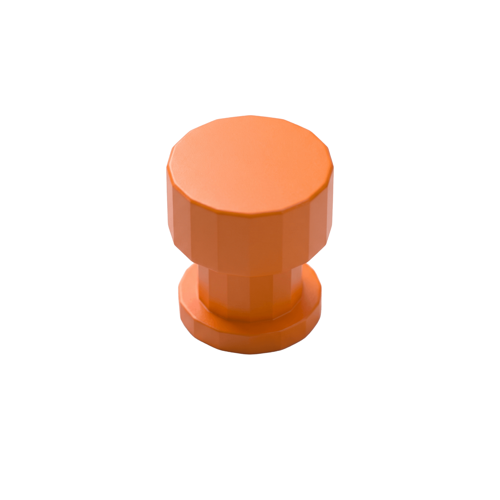
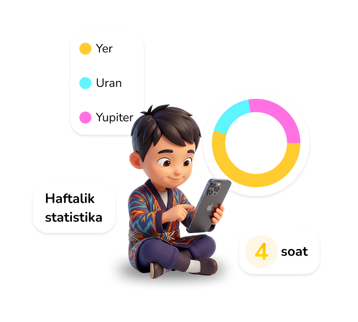

01
Tayyor javoblar yo'q
AI-ustoz muammoning yechimini aytmaydi, uni qanday yechishni o'rgatadi. Bola o'ylashga majbur bo'ladi.
Kichik Alloma — loyiha asoschisi va rahbari (Founder, Project Manager) Shoxrux Komiljonov tomonidan yaratilgan, 8 ta rivojlanish sayyorasi (Yer, Mars, Uran, Venera, Neptun, Saturn, Merkuriy, Yupiter) orqali bolalarni mustaqil fikrlashga, intizomga va o'z hissiyotlarini boshqarishga o'rgatuvchi yagona kosmik ta'lim ekotizimidir.
Har bir sayyora ularning yashirin salohiyatini ochishga yordam beradi

AI bilan cheklangan, maqsadli o'qish.

Video asosida harakat va mashqlar.

So'z, talaffuz, test va mustahkamlash.

Oltin tangalar orqali buyumlar.

Hissiyotlarni qayd etish va Parent Panel.

Masala, test, yechim va mukofot.

Kasblarni kashf etish va qiziqish.

Reja, bajarilish, intizom.



AI-ustoz muammoning yechimini aytmaydi, uni qanday yechishni o'rgatadi. Bola o'ylashga majbur bo'ladi.
Bolangiz gadjetga qaram bo'lib qolmaydi. Kunlik 20-daqiqalik cheklov ularni rejalashtirishga va qadriga yetishga o'rgatadi.
Ilova nafaqat matematika, balki jismoniy faollik va psixologik barqarorlikni (Neptun) ham qamrab oladi.
Virtual Venera do'koni orqali bola pul ishlash, yig'ish va sarflash tushunchalarini amalda o'rganadi.

Ro'yxatdan o'ting — kosmik sayohatlarda biz bilan birga bo'ling.


8 ta olam missiyalarini muvaffaqiyatli yakunlagan mitti kashfiyotchilar o'zlarining birinchi "Kosmik Sertifikati"ni qo'lga kiritadilar. Bu ularning kelajakdagi katta zafarlari sari ishonchli qadamdir.